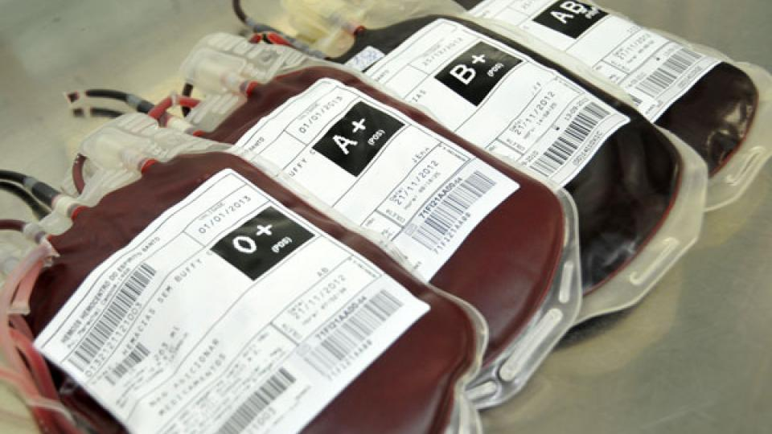

Por que é importante doar sangue?
A doação de sangue é fundamental em diversas situações médicas. Pessoas que sofrem de doenças crônicas sanguíneas, como a anemia falciforme ou distúrbios de coagulação, frequentemente necessitam de transfusões regulares para manter sua saúde e qualidade de vida.
Pacientes portadores de outras doenças, como o câncer (principalmente a leucemia), vítimas de acidentes graves e indivíduos submetidos a cirurgias de grande porte também podem necessitar de transfusões sanguíneas.
A demanda por sangue é constante e urgente, sobretudo em períodos em que há uma diminuição nos estoques dos bancos de sangue, como nas férias, festas regionais, durante o inverno ou em feriados prolongados. A escassez de sangue pode prejudicar seriamente o atendimento médico e colocar em risco a vida de muitas pessoas.
Não existe um substituto para o sangue humano e a melhor maneira de suprir essa necessidade é por meio da doação voluntária. Uma bolsa de sangue doada é capaz de beneficiar múltiplos pacientes, uma vez que a quantidade de sangue total pode ser fracionada de acordo com os seus constituintes.
Portanto, o principal objetivo da doação é manter os estoques dos bancos de sangue sempre abastecidos, não apenas em datas específicas ou quando algum conhecido precisar.